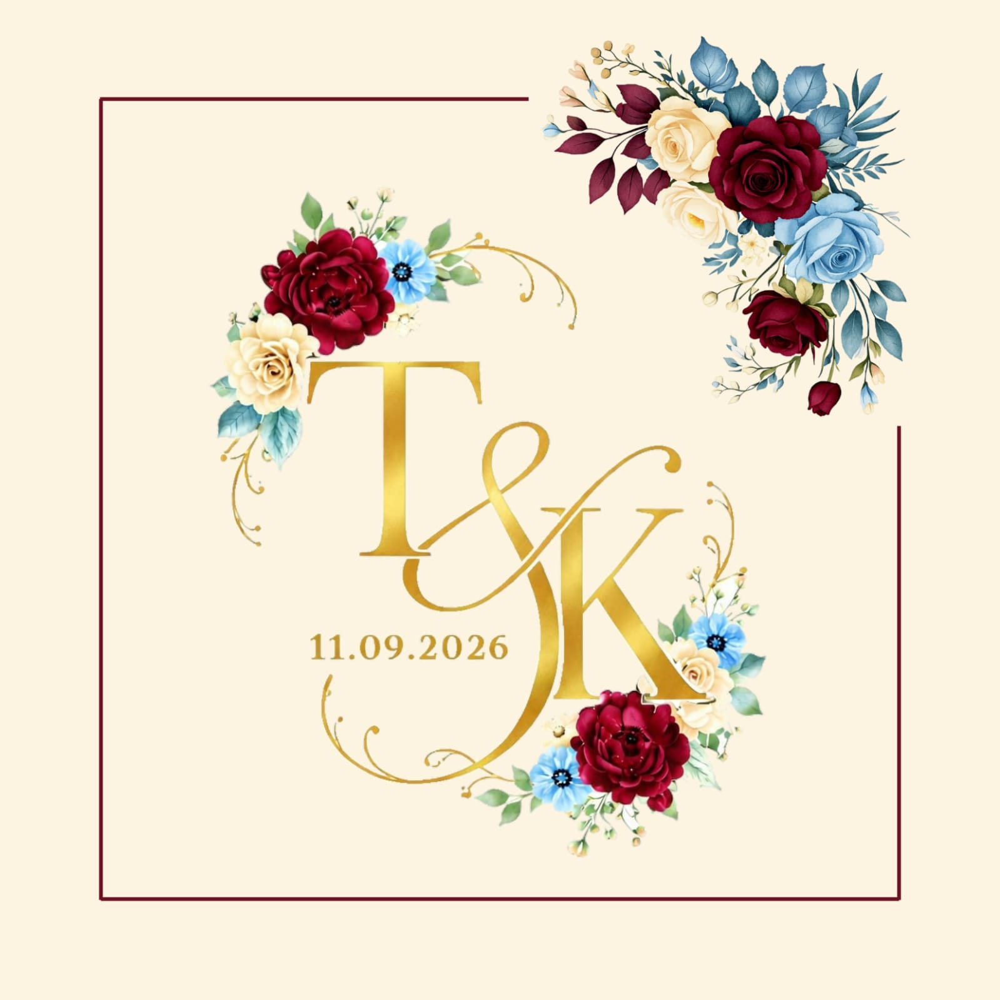
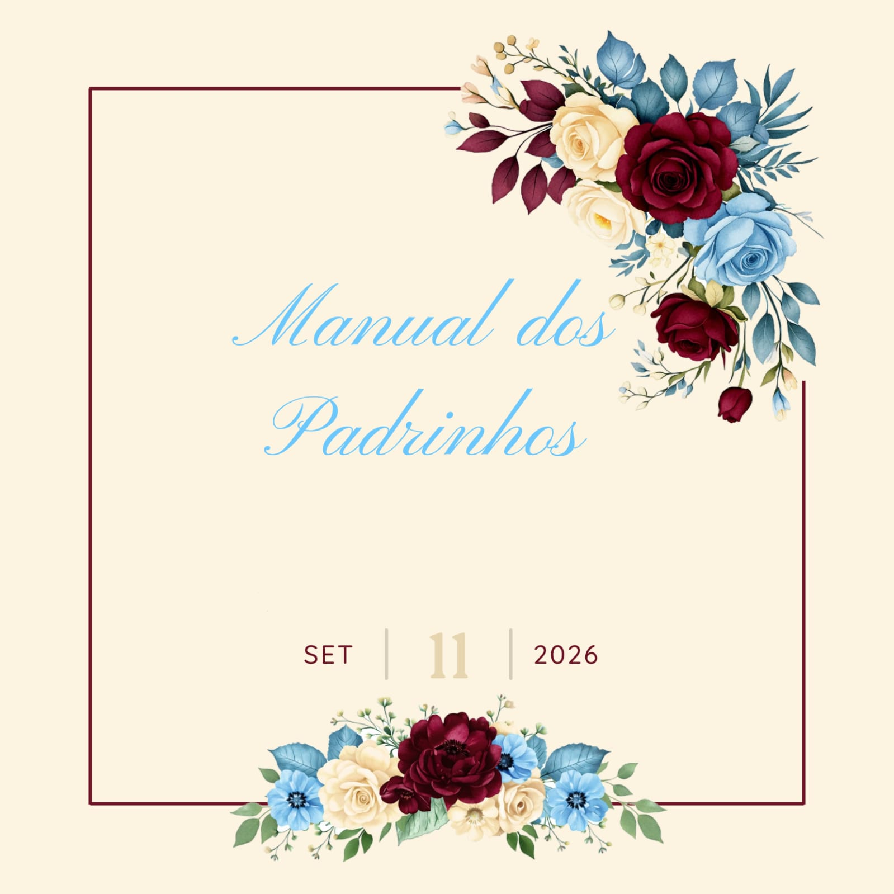
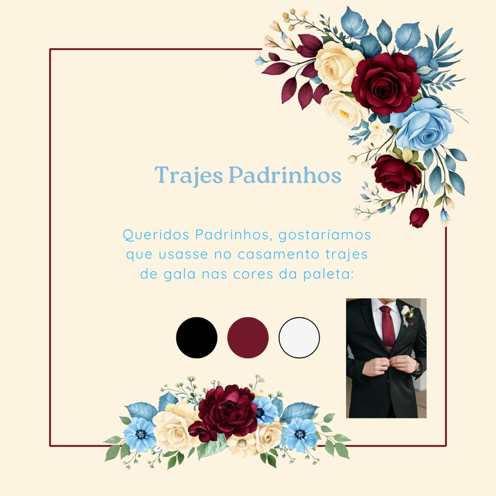
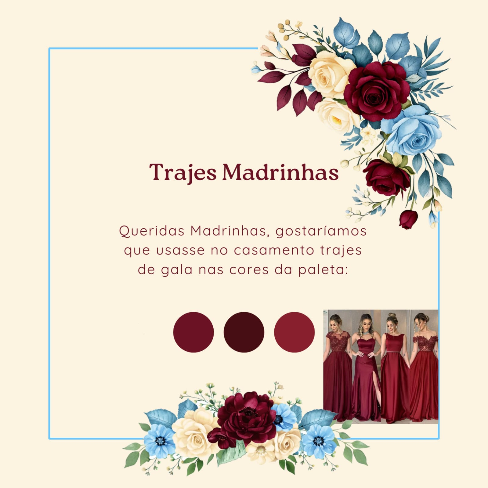
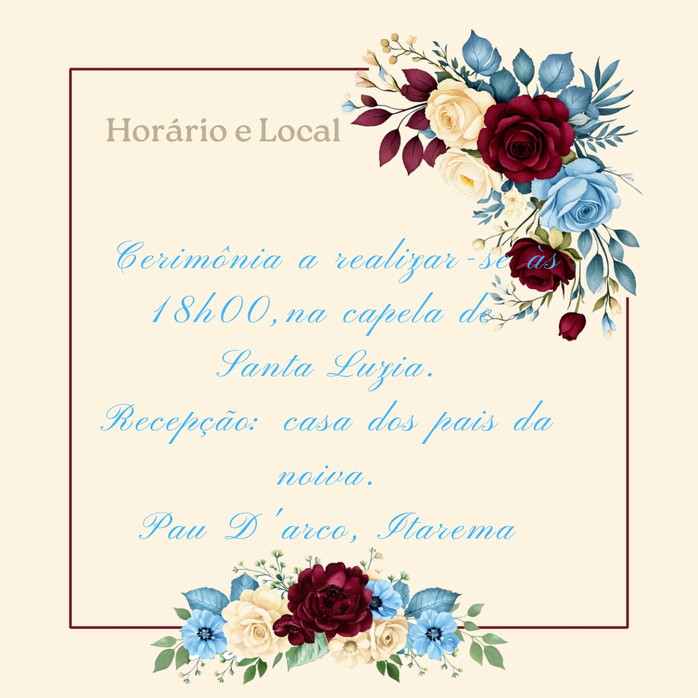
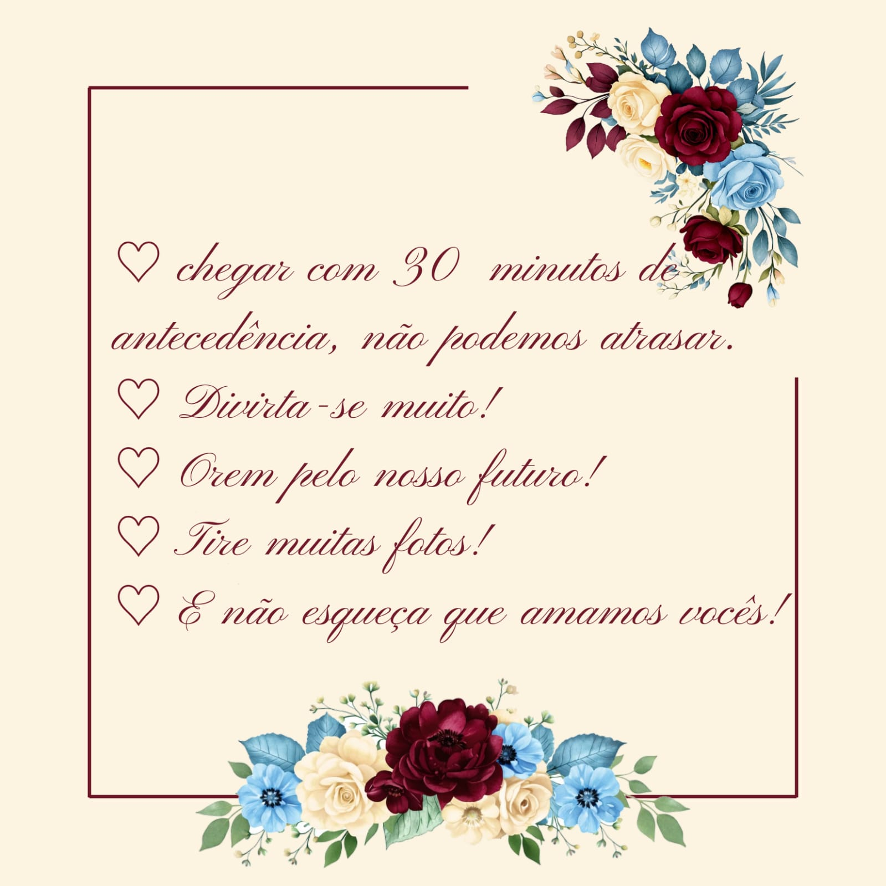

11.09.2026

Queridos padrinhos, este manual foi preparado com muito carinho para orientar e celebrar junto conosco este momento especial.

Pedimos que os padrinhos usem trajes de gala nas cores da paleta indicada.

As madrinhas devem usar vestidos de gala em tons de marsala.

Cerimônia às 18h00 na Capela de Santa Luzia. Recepção na casa dos pais da noiva.

Chegar com antecedência, divertir-se, orar pelo futuro, tirar muitas fotos e lembrar que amamos vocês!